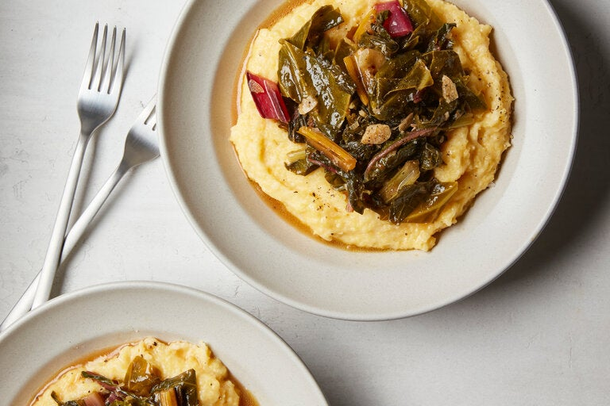

Grits and Greens

This weeknight dinner is the perfect homey and rustic dish. Quick-cooking grits become extra flavorful because they are simmered in vegetable stock and get a creamy bite from the combination of milk and sharp Cheddar that’s stirred in once the grits are tender. Using both collard greens and Swiss chard lends more interesting and varied tastes and textures. Because the leaves are cooked just until wilted, apple cider vinegar is added at the end to help balance out any bitterness. A little hot sauce splashed on just before serving helps tie the entire dish together, awakening the flavors in both the greens and grits.
The Ingredients
FOR THE GRITS
- 2 cups vegetable stock
- 1 cup quick-cooking grits
- 1/4 teaspoon ground black pepper
- 1/2 cup shredded sharp Cheddar (3 ounces)
- 1/2 cup whole milk
- salt
FOR THE GREENS
- 2 tablespoons extra-virgin olive oil
- 1 shallot, minced
- 2 garlic cloves, sliced
- Pinch of red-pepper flanks
- 1 bunch collard greens (12 1/2 ounces), stems removed, leaves cut into 1-inch pieces
- 1 bunch Swiss chard (10 ounces), leaves and stems cut into 1-inch pieces
- salt and black pepper
- 1 bup vegetable stock
- 2 tablespoons apple cider vinegar
- hot sauce, to serve
The Instructions
- Make the grits: In a medium saucepan, heat the vegetable stock and 2 cups water over medium-high until boiling. Once boiling, slowly pour in the grits while whisking to reduce lumps. Once the grits come to a boil, reduce the heat to maintain a simmer and cook, whisking frequently, until thickened, 5 to 8 minutes.
- Remove the pan from the stove. Season the grits with the pepper, then stir in the milk and cheese until the cheese melts. Season to taste with salt. Set aside and cover to keep warm.
- Meanwhile, make the greens: Heat the oil in a large Dutch oven or heavy-bottomed pot over medium-high. Add the shallot and garlic, and cook, stirring often, until softened, 2 to 3 minutes. Add the red-pepper flakes, collards and chard. Toss to combine until wilted, 3 to 5 minutes. Season with salt, add the vegetable stock and bring to a simmer.
- Reduce the heat to maintain a simmer, and cook, stirring occasionally, until the greens are very tender, 10 to 15 minutes. Stir in the vinegar, and season again to taste with salt and pepper. Divide the grits among plates and top with the greens and a dash of hot sauce.